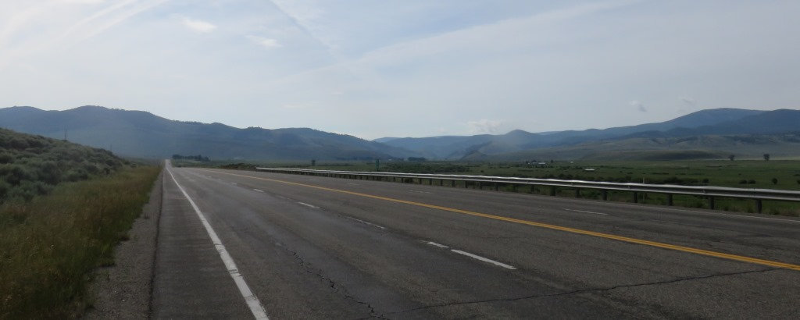
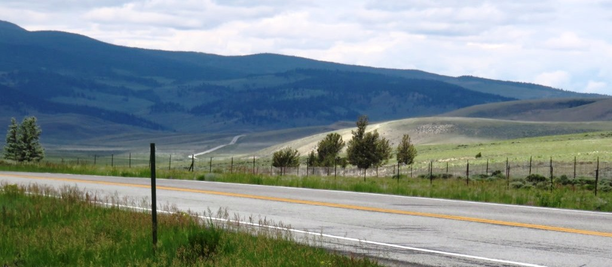
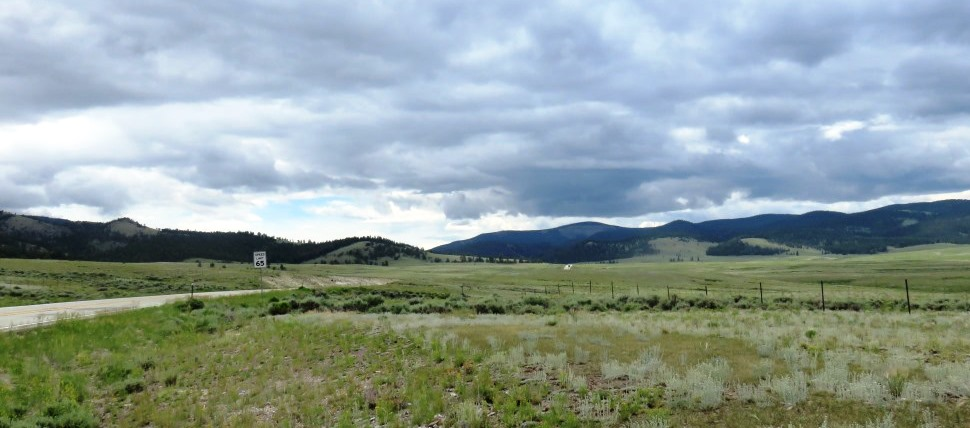
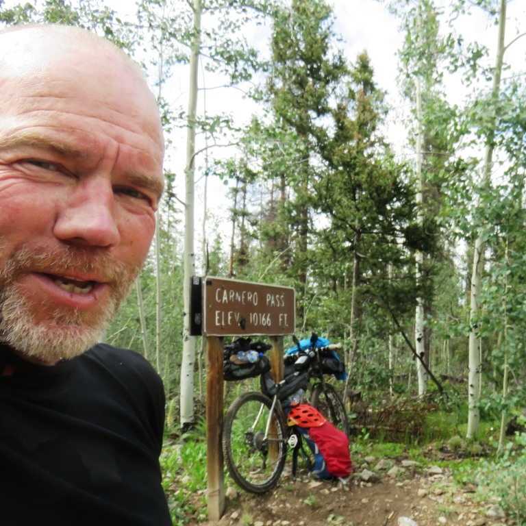
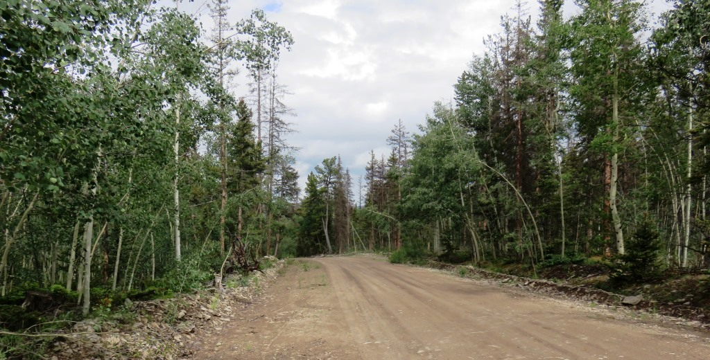
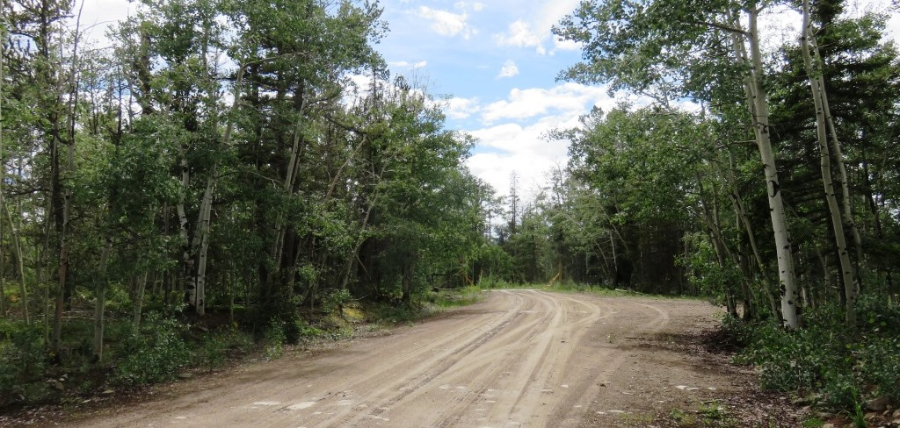
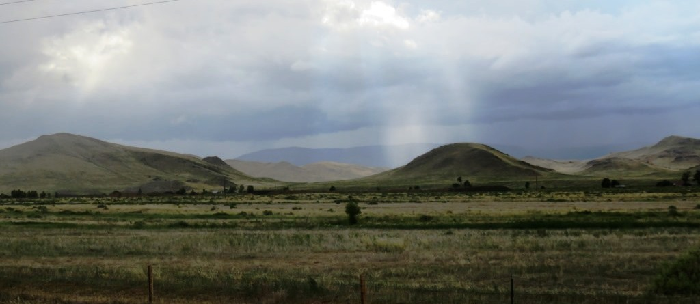
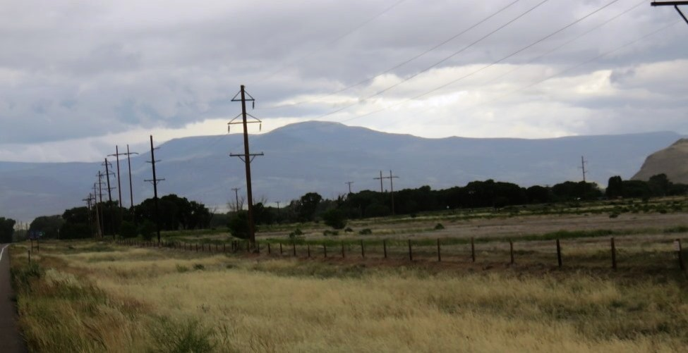

Leaving the Teepee it was an overcast day. The initial 13 miles was on the US50 to Doyleville where I turned south onto gravel roads.

Road to Doyleville

Road to Doyleville

The grind on Gravel
20 miles to the next road
There were some long slow climbs in this section of gravel prior to getting back onto CO 114.

Looking back at the ground I covered
Riding into the storm cloudsNorth Cochetopa Pass
I decided to take the road over North Cochetopa Pass along the road. This was another 1,000 ft climb which went pretty well. I reached the pass about noon and rejoined the TD route at the low point before heading up to Carnero Pass.
 From here it was down for 15 miles and then right back up.
From here it was down for 15 miles and then right back up.
On to Carnero Pass

When I turned off the highway to the approach road to Carnero Pass I had a very large lighting blast directly behind me. I was glad I didn't see it because I may have stopped for the day. The pass was 12 miles out and there was rain all around. I decided to go as far as I could and stop when the rain began.

The rain came about 3 miles from the top and I found a clump of trees to give me some protection. I stopped to have the sandwich I had gotten in Sargents. There were was some lighting around but no directly in my area. This slowed after about 30 minutes and I decided to try and get over the top.
Carnero Pass
Approaching the pass I had a red jeep come up beside me and returned my head lamp which had been hooked onto my handlebar. It was the second time someone had turned around to return something I lost.

It's always nice to get to the top.They also offered a nice cold bottle of water which I ws glad to have. I saved it until I reached the pass. It was very refreshing. I also packed it out and you can see it attached to my bike below.
 Second 10,000 foot pass of the day.
Second 10,000 foot pass of the day.

The road I had come up.Sprinting in front of the rain.
Up on the pass it hadn't rained that much. When I was climbing up to the pass the rain and wind were at my back which helped. Once over the top I got a significant push from the wind during the 15 miles down into the flats outside Del Norte.
I stopped at Storm King Campground about 3 miles from the pass with a thought of staying the night. Before I could even get off my bike I was swarmed by mosquitos. I got out of there as fast as I could.

About to head down toward Del Norte at 20 MPHThere was some great canyons and hodos on the way down. Each time I would stop the rain would come in behind me and I would ride as fast as I could to get out in front of it.
 Downhill through some great canyons
Downhill through some great canyons

As I approached Del Norte the sun broke through the clouds in a couple spots. I was now going across the wind and hoping to get to town before the storm caught me.
I was now going across the wind and hoping to get to town before the storm caught me.
During the final 2 miles into Del Norte I got wet again but I knew a hotel and maybe a rest day were ahead of me.

Storm clouds above my destination.July 5 - 100 miles - 2 passes - Sargents to Del Norte.
This was a big day. The previous few days I had been averaging only about 60 miles per day. I had wanted to reach Del Norte and the rain and weather were definitely starting to turn. The Windsor hotel was just what I needed after the Leaky Teepee in Sargents. There was a laundromat on the edge of town and the amish were selling pecan cinnamon rolls. What could be better. I decided to take the following day off before trying to go over the highest peak on the route. I also wanted to try and plot a course from here to Mexico just in case the thunderstorms continued. It turned out that both Monday and Tuesday would be rainy days and my new course along US285 would be the best approach to getting south without lighting.
See full screen map To go places and do things that I've never done before – that’s what living is all about.Text by Jim O'Brien . Photographs by Jim O'BrienTD on Flickr.